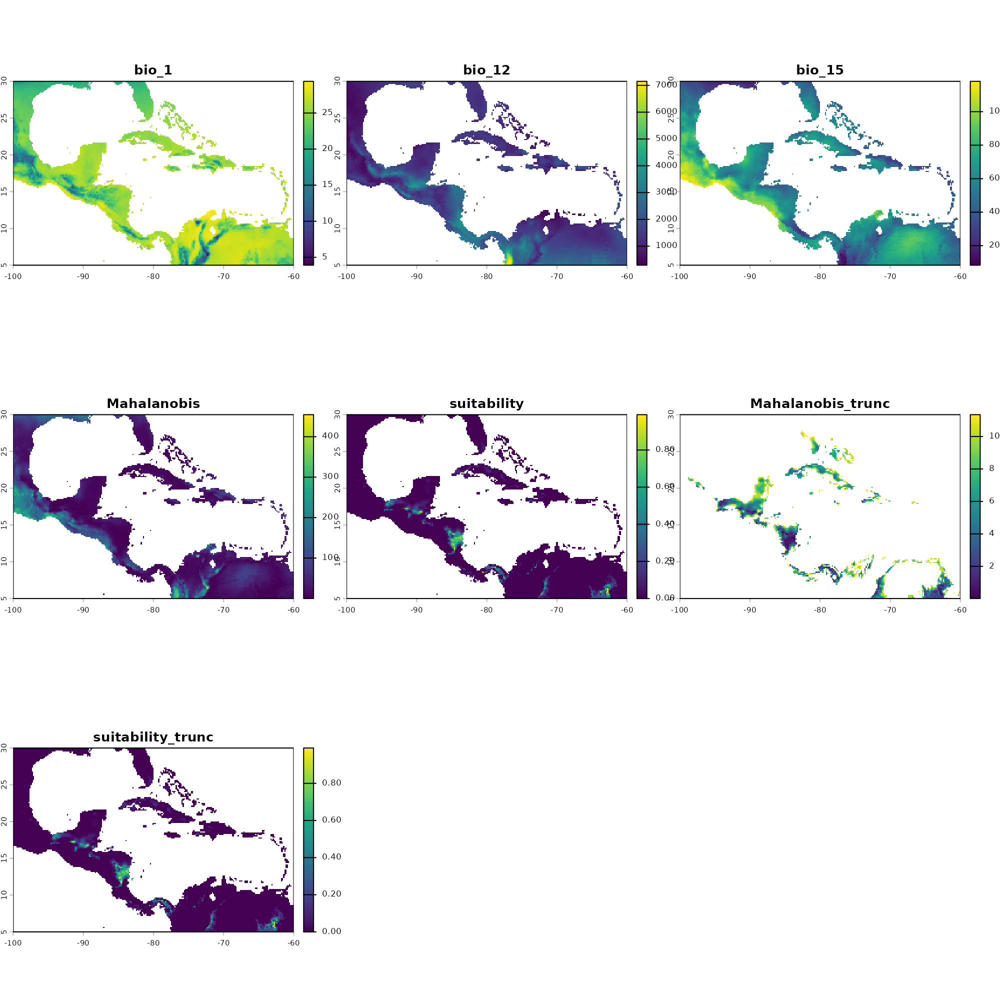
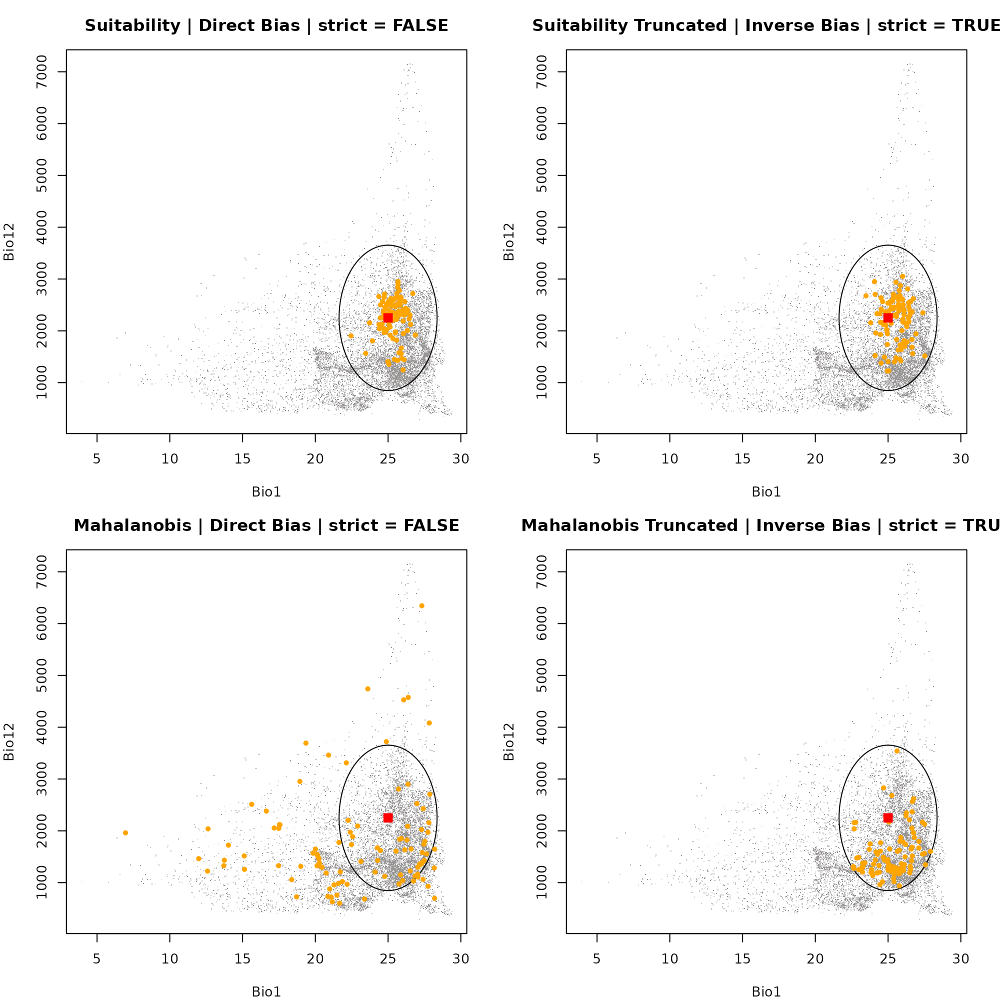
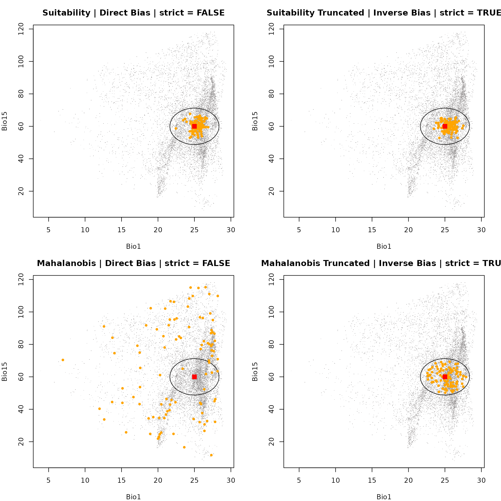
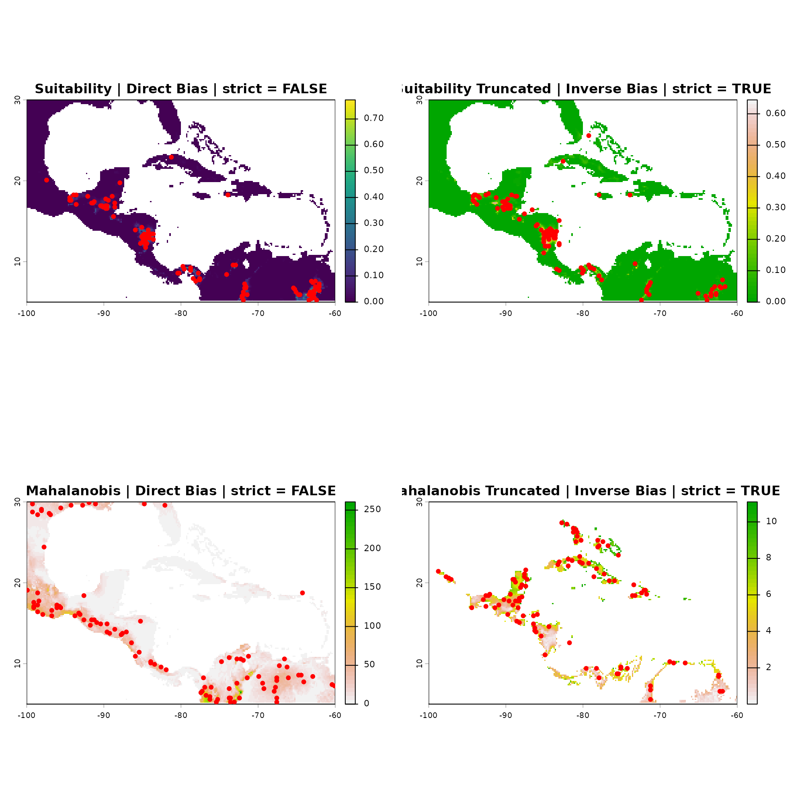

Description
The nicheR package provides a flexible suite of sampling
functions for drawing occurrence points from raster layers.
This vignette covers the workflow for simulating spatially biased occurrence data:
Defining the fundamental niche space (
build_ellipsoid()).Projecting the niche to geographic space (
predict()).Simulating biased sampling efforts to reflect real-world uneven data collection (
sample_biased_data()).
Defining the Niche Space
We begin by defining the fundamental niche of our species based on absolute environmental tolerances.
# Load environmental covariates (Bio1, Bio12, Bio15)
bios_file <- system.file("extdata", "ma_bios.tif", package = "nicheR")
bios <- rast(bios_file)
vars <- c("bio_1", "bio_12", "bio_15")
# Define environmental ranges (Min and Max)
range_df <- data.frame(bio_1 = c(22, 28),
bio_12 = c(1000, 3500),
bio_15 = c(50, 70))
# Build ellipsoid niche model
ell <- build_ellipsoid(range = range_df)
#> Starting: building ellipsoidal niche from ranges...
#> Step: computing covariance matrix...
#> Step: computing additional ellipsoidal niche metrics...
#> Done: created ellipsoidal niche.Generating the Prediction Surface
Once the niche space is defined, we project it onto a geographic
landscape (a SpatRaster of environmental variables). This
yields spatial predictions of habitat suitability and environmental
distance (Mahalanobis distance).
Key Arguments
object: The ellipsoid object created in the previous step.newdata: A spatial raster (SpatRaster) containing the environmental layers for the geographic region.include_mahalanobis: Logical. IfTRUE, calculates the Mahalanobis distance from the niche centroid for each pixel.include_suitability: Logical. IfTRUE, converts the distances into a continuous habitat suitability index (0 to 1).suitability_truncated/mahalanobis_truncated: Logical. IfTRUE, truncates the metrics so that areas strictly outside the defined ellipsoid limits are assigned a suitability of 0 (or maximum distance for Mahalanobis).
# Predict spatial surfaces based on the defined ellipsoid
pred <- predict(ell,
newdata = bios,
include_mahalanobis = TRUE,
include_suitability = TRUE,
suitability_truncated = TRUE,
mahalanobis_truncated = TRUE,
keep_data = TRUE)
#> Starting: suitability prediction using newdata of class: SpatRaster...
#> Step: Ignoring extra predictor columns: bio_5, bio_6, bio_7, bio_13, bio_14
#> Step: Using 3 predictor variables: bio_1, bio_12, bio_15
#> Done: Prediction completed successfully. Returned raster layers: bio_1, bio_12, bio_15, Mahalanobis, suitability, Mahalanobis_trunc, suitability_trunc
# Visualize the resulting continuous prediction layers
plot(pred)
Introducing Sampling Bias
sample_bias_data()
Objective: To simulate spatially biased occurrence data from a prediction layer.
Purpose: Real-world biodiversity data is rarely collected systematically. Biologists often sample near roads, rivers, or research stations. This workflow allows you to simulate spatial sampling bias to test how robust your ecological models are to imperfect detection and clustered collection efforts.
Key Functions & Arguments:
prepare_bias(): Standardizes a raw bias layer (e.g., distance to roads) into a probability surface.apply_bias(): Multiplies your underlying prediction surface (suitability or distance) by the prepared bias surface.sample_biased_data(): Draws the actual points from the newly integrated biased surface.
Preparing the Bias Layer
Before applying spatial bias to our ecological predictions, we must convert raw bias proxies (e.g., distance to roads, human population density) into standardized probability surfaces.
The prepare_bias() function standardizes one or more raw
raster layers (min-max normalization to a 0-1 scale) and allows you to
define how each layer restricts sampling. If multiple layers are
provided, it multiplies them together to create a single composite bias
surface.
Key Arguments
-
bias_surface: ASpatRaster(single or multi-layer) or a list ofSpatRasterobjects representing the raw bias covariates. -
effect_direction: A character vector dictating how the bias values affect sampling.-
"direct": Higher values in the raster increase sampling probability. -
"inverse": Higher values in the raster decrease sampling probability (automatically transformed to 1 - value). - Note: If providing multiple bias layers, this can be a vector mapping a direction to each respective layer.
-
-
template_layer: Optional. A referenceSpatRasterused to align all bias layers. IfNULL, the finest-resolution bias layer is used automatically. -
include_composite: Logical. IfTRUE(default), returns the final multiplied composite bias surface. -
include_processed_layers: Logical. IfTRUE, returns the standardized individual layers before they were multiplied together. Default isFALSE. -
mask_na: Logical. Controls howNAvalues are combined. IfTRUE, any pixel with anNAin any layer becomesNAin the composite (intersection). IfFALSE(default), uses the union of extents and ignoresNAs where other layers have valid values. -
verbose: Logical. Prints progress messages ifTRUE.
# Load the raw bias layer(s)
biases_file <- system.file("extdata", "ma_biases.tif", package = "nicheR")
biases <- rast(biases_file)
# Prepare bias surfaces
# Assuming 'biases' has two layers, we map a direct effect to the first
# and an inverse effect to the second.
prep_biases <- prepare_bias(
bias_surface = biases,
effect_direction = c("direct", "inverse"),
include_composite = TRUE,
verbose = TRUE
)
#> Starting: prepare_bias()
#> Step: splitting SpatRaster into layers...
#> Step: bias_surface is a SpatRaster. Using first layer as template surface...
#> Step: mask_na = FALSE. Expanding template to union extent (keeping finest resolution).
#> Step: standarizing (min/max) and applying direction of effect to 2 bias layer/s...
#> Step: building standarized (min/max) directional composite bias surface (mask_na = FALSE)...
#> Done: prepare_bias()Applying Bias to Predictions
Once the composite bias surface is prepared, it must be integrated with your habitat suitability or environmental distance maps.
The apply_bias() function mathematically merges your
niche prediction with the bias surface, aligning grids if necessary, and
cropping the output to the exact domain of your suitability map.
Key Arguments
prepared_bias: The output list fromprepare_bias(), or a single-layerSpatRastercomposite bias surface.prediction: YourSpatRastercontaining the environmental predictions (suitability or Mahalanobis distance) generated bypredict(). Values must be scaled between 0 and 1.prediction_layer: Character. The specific layer name to extract from yourpredictionobject (e.g.,"suitability","Mahalanobis_trunc").-
effect_direction: Character. Dictates how the bias is multiplied against the prediction."direct"(default): Multiplies prediction by the bias directly."inverse": Multiplies prediction by (1 - bias).
verbose: Logical. Prints progress messages ifTRUE.
# 1. Suitability applied with Direct Bias
app_suit_dir <- apply_bias(
prepared_bias = prep_biases,
prediction = pred,
prediction_layer = "suitability",
effect_direction = "direct"
)
#> Starting: apply_bias()
#> Step: applying bias with 'direct' effect to to "suitability" layer...
#> Done: apply_bias(). Note: values are no longer probabilities
# 2. Truncated Suitability applied with Inverse Bias
app_suit_trunc_inv <- apply_bias(
prepared_bias = prep_biases,
prediction = pred,
prediction_layer = "suitability_trunc",
effect_direction = "inverse"
)
#> Starting: apply_bias()
#> Step: applying bias with 'inverse' effect to to "suitability_trunc" layer...
#> Done: apply_bias(). Note: values are no longer probabilities
# 3. Mahalanobis Distance applied with Direct Bias
app_maha_dir <- apply_bias(
prepared_bias = prep_biases,
prediction = pred,
prediction_layer = "Mahalanobis",
effect_direction = "direct"
)
#> Starting: apply_bias()
#> Step: applying bias with 'direct' effect to to "Mahalanobis" layer...
#> Done: apply_bias(). Note: values are no longer probabilities
# 4. Truncated Mahalanobis Distance applied with Inverse Bias
app_maha_trunc_inv <- apply_bias(
prepared_bias = prep_biases,
prediction = pred,
prediction_layer = "Mahalanobis_trunc",
effect_direction = "inverse"
)
#> Starting: apply_bias()
#> Step: applying bias with 'inverse' effect to to "Mahalanobis_trunc" layer...
#> Done: apply_bias(). Note: values are no longer probabilitiesGenerating the Samples
Now we sample 100 occurrences from each of our newly biased prediction layers and extract the underlying environmental conditions so we can map them in E-Space.
# Scenario 1: Suitability | Direct Bias | Strict = FALSE
occ_suit_dir <- sample_biased_data(n_occ = 100,
prediction = app_suit_dir,
prediction_layer = "suitability_biased_direct",
strict = FALSE)
#> Starting: sample_biased_data()
#> Done: sampled 100 points from biased prediction layer
env_suit_dir <- terra::extract(bios, occ_suit_dir[, c(1:2)])
# Scenario 2: Suitability Truncated | Inverse Bias | Strict = TRUE
occ_suit_trunc_inv <- sample_biased_data(n_occ = 100,
prediction = app_suit_trunc_inv,
prediction_layer = "suitability_trunc_biased_inverse",
strict = TRUE)
#> Starting: sample_biased_data()
#>
#> Done: sampled 100 points from biased prediction layer
env_suit_trunc_inv <- terra::extract(bios, occ_suit_trunc_inv[, c(1:2)])
# Scenario 3: Mahalanobis | Direct Bias | Strict = FALSE
occ_maha_dir <- sample_biased_data(n_occ = 100,
prediction = app_maha_dir,
prediction_layer = "Mahalanobis_biased_direct",
strict = FALSE)
#> Starting: sample_biased_data()
#>
#> Done: sampled 100 points from biased prediction layer
env_maha_dir <- terra::extract(bios, occ_maha_dir[, c(1:2)])
# Scenario 4: Mahalanobis Truncated | Inverse Bias | Strict = TRUE
occ_maha_trunc_inv <- sample_biased_data(n_occ = 100,
prediction = app_maha_trunc_inv,
prediction_layer = "Mahalanobis_trunc_biased_inverse",
strict = TRUE)
#> Starting: sample_biased_data()
#>
#> Done: sampled 100 points from biased prediction layer
env_maha_trunc_inv <- terra::extract(bios, occ_maha_trunc_inv[, c(1:2)])Visualizing in E-Space
Because these points are driven by geographic bias (e.g., proximity to a road) rather than purely optimal biology, their distribution in E-Space will often look scattered or artificially clustered away from the true niche centroid.
Dimension 1: Bio1 vs. Bio12
par(mfrow = c(2, 2), mar = c(4, 4, 3, 2))
# Plot 1: Suitability | Direct Bias | strict = FALSE
plot_ellipsoid(ell, background = as.data.frame(bios[[vars]]), dim = c(1, 2), pch = ".", col_bg = "#9a9797",
xlab = "Bio1", ylab = "Bio12", main = "Suitability | Direct Bias | strict = FALSE")
add_data(env_suit_dir, x = "bio_1", y = "bio_12", pts_col = "orange", pch = 20)
add_data(as.data.frame(t(ell$centroid)), x = "bio_1", y = "bio_12", pts_col = "red", pch = 15, cex = 1.5)
# Plot 2: Suitability Truncated | Inverse Bias | strict = TRUE
plot_ellipsoid(ell, background = as.data.frame(bios[[vars]]), dim = c(1, 2), pch = ".", col_bg = "#9a9797",
xlab = "Bio1", ylab = "Bio12", main = "Suitability Truncated | Inverse Bias | strict = TRUE")
add_data(env_suit_trunc_inv, x = "bio_1", y = "bio_12", pts_col = "orange", pch = 20)
add_data(as.data.frame(t(ell$centroid)), x = "bio_1", y = "bio_12", pts_col = "red", pch = 15, cex = 1.5)
# Plot 3: Mahalanobis | Direct Bias | strict = FALSE
plot_ellipsoid(ell, background = as.data.frame(bios[[vars]]), dim = c(1, 2), pch = ".", col_bg = "#9a9797",
xlab = "Bio1", ylab = "Bio12", main = "Mahalanobis | Direct Bias | strict = FALSE")
add_data(env_maha_dir, x = "bio_1", y = "bio_12", pts_col = "orange", pch = 20)
add_data(as.data.frame(t(ell$centroid)), x = "bio_1", y = "bio_12", pts_col = "red", pch = 15, cex = 1.5)
# Plot 4: Mahalanobis Truncated | Inverse Bias | strict = TRUE
plot_ellipsoid(ell, background = as.data.frame(bios[[vars]]), dim = c(1, 2), pch = ".", col_bg = "#9a9797",
xlab = "Bio1", ylab = "Bio12", main = "Mahalanobis Truncated | Inverse Bias | strict = TRUE")
add_data(env_maha_trunc_inv, x = "bio_1", y = "bio_12", pts_col = "orange", pch = 20)
add_data(as.data.frame(t(ell$centroid)), x = "bio_1", y = "bio_12", pts_col = "red", pch = 15, cex = 1.5)
dev.off()
#> null device
#> 1Dimension 1: Bio1 vs. Bio12
par(mfrow = c(2, 2), mar = c(4, 4, 3, 2))
# Plot 1: Suitability | Direct Bias | strict = FALSE
plot_ellipsoid(ell, background = as.data.frame(bios[[vars]]), dim = c(1, 3), pch = ".", col_bg = "#9a9797",
xlab = "Bio1", ylab = "Bio15", main = "Suitability | Direct Bias | strict = FALSE")
add_data(env_suit_dir, x = "bio_1", y = "bio_15", pts_col = "orange", pch = 20)
add_data(as.data.frame(t(ell$centroid)), x = "bio_1", y = "bio_15", pts_col = "red", pch = 15, cex = 1.5)
# Plot 2: Suitability Truncated | Inverse Bias | strict = TRUE
plot_ellipsoid(ell, background = as.data.frame(bios[[vars]]), dim = c(1, 3), pch = ".", col_bg = "#9a9797",
xlab = "Bio1", ylab = "Bio15", main = "Suitability Truncated | Inverse Bias | strict = TRUE")
add_data(env_suit_trunc_inv, x = "bio_1", y = "bio_15", pts_col = "orange", pch = 20)
add_data(as.data.frame(t(ell$centroid)), x = "bio_1", y = "bio_15", pts_col = "red", pch = 15, cex = 1.5)
# Plot 3: Mahalanobis | Direct Bias | strict = FALSE
plot_ellipsoid(ell, background = as.data.frame(bios[[vars]]), dim = c(1, 3), pch = ".", col_bg = "#9a9797",
xlab = "Bio1", ylab = "Bio15", main = "Mahalanobis | Direct Bias | strict = FALSE")
add_data(env_maha_dir, x = "bio_1", y = "bio_15", pts_col = "orange", pch = 20)
add_data(as.data.frame(t(ell$centroid)), x = "bio_1", y = "bio_15", pts_col = "red", pch = 15, cex = 1.5)
# Plot 4: Mahalanobis Truncated | Inverse Bias | strict = TRUE
plot_ellipsoid(ell, background = as.data.frame(bios[[vars]]), dim = c(1, 3), pch = ".", col_bg = "#9a9797",
xlab = "Bio1", ylab = "Bio15", main = "Mahalanobis Truncated | Inverse Bias | strict = TRUE")
add_data(env_maha_trunc_inv, x = "bio_1", y = "bio_15", pts_col = "orange", pch = 20)
add_data(as.data.frame(t(ell$centroid)), x = "bio_1", y = "bio_15", pts_col = "red", pch = 15, cex = 1.5)
dev.off()
#> null device
#> 1Visualizing in G-Space
In G-Space, we plot our occurrences over the biased
prediction surfaces created by apply_bias(). This
visualizes exactly how the spatial restriction of the sampling effort
forces the points into specific geographic clusters, regardless of the
underlying fundamental habitat quality.
par(mfrow = c(2, 2), mar = c(4, 4, 3, 2))
# Plot 1: Suitability | Direct Bias | strict = FALSE
plot(app_suit_dir$suitability_biased,
main = "Suitability | Direct Bias | strict = FALSE")
points(occ_suit_dir[, c(1:2)], pch = 20, col = "red", cex = 1.2)
# Plot 2: Suitability Truncated | Inverse Bias | strict = TRUE
plot(app_suit_trunc_inv$suitability_trunc_biased,
main = "Suitability Truncated | Inverse Bias | strict = TRUE", col = grDevices::terrain.colors(50))
points(occ_suit_trunc_inv[, c(1:2)], pch = 20, col = "red", cex = 1.2)
# Plot 3: Mahalanobis | Direct Bias | strict = FALSE
plot(app_maha_dir$Mahalanobis_biased,
main = "Mahalanobis | Direct Bias | strict = FALSE", col = rev(grDevices::terrain.colors(50)))
points(occ_maha_dir[, c(1:2)], pch = 20, col = "red", cex = 1.2)
# Plot 4: Mahalanobis Truncated | Inverse Bias | strict = TRUE
plot(app_maha_trunc_inv$Mahalanobis_trunc_biased,
main = "Mahalanobis Truncated | Inverse Bias | strict = TRUE", col = rev(grDevices::terrain.colors(50)))
points(occ_maha_trunc_inv[, c(1:2)], pch = 20, col = "red", cex = 1.2)
dev.off()
#> null device
#> 1